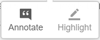

Welcome to Introduction to Spatial Analytics -course that provides the theories, tools, and methods that an engineer and modern data scientist needs to meet the challenges of contemporary data science applied to geographic problems and data.
Before taking this course, it is required to know the basics of Python programming as well as GIS. If you are new to Python, or would like to refresh your Python skills, we recommend that you start with an online and open access course called Geo-Python which is available at geo-python.github.io (includes tutorials, videos, exercises).
In this course, we dive into theories and methods of Spatial Data Analytics using python programming language. This part of the course runs for seven weeks starting on Monday the 7th of September 2020.
Lesson materials are published on these pages each week on Monday, after which they are publicly available for anyone interested:
Week
Theme
1
Introduction to spatial analytics (workflow + overview of common methodologies)
2
Spatial data aquisition, cleaning, filtering, and classification.
3
Point pattern analysis and clustering
4
Spatial autocorrelation and LISA
5
Spatial interpolation (IDW and Kriging)
6
Spatial network analysis
7
Spatial regression
THIS IS JUST A DEMO!
NOTE: This page does not contain a full course. The purpose of this website is to demonstrate how Henrikki would be teaching the course using modern online teaching technologies.
Make notes and highlight text on browser!
This course site offers you the possibility to make notes and highlight the important pieces of text from the materials, just like you would do with printed course materials (well almost..). You can access these features by creating an account at Hypothes.is and login in from the upper right corner of this website by pressing button. After login in, you can create a note or highligh text simply by 1) selecting the text that you wish to mark and 2) choosing from the following button  whether you want to make a note or highlight the text. These notes and highlighted text will always be available for you when you come back to the materials and login to Hypothes.is.
Repeat and run all the examples directly on your browser!
The materials are written in a way that you can follow them step by step exactly as they are written and test all the codes. We provide you cloud computing resources that you can use to run the codes using an IDE using Binder and CSC Finland cloud computing resources (for Finnish students). If you work from your own computer, you need to adjust the file paths to the data accordingly.
Open Access!
The course is open for everyone. The aim of this course is to share the knowledge and help people to get started with their journey for doing spatial analytics more efficiently and in a reproducible manner using Python programming.